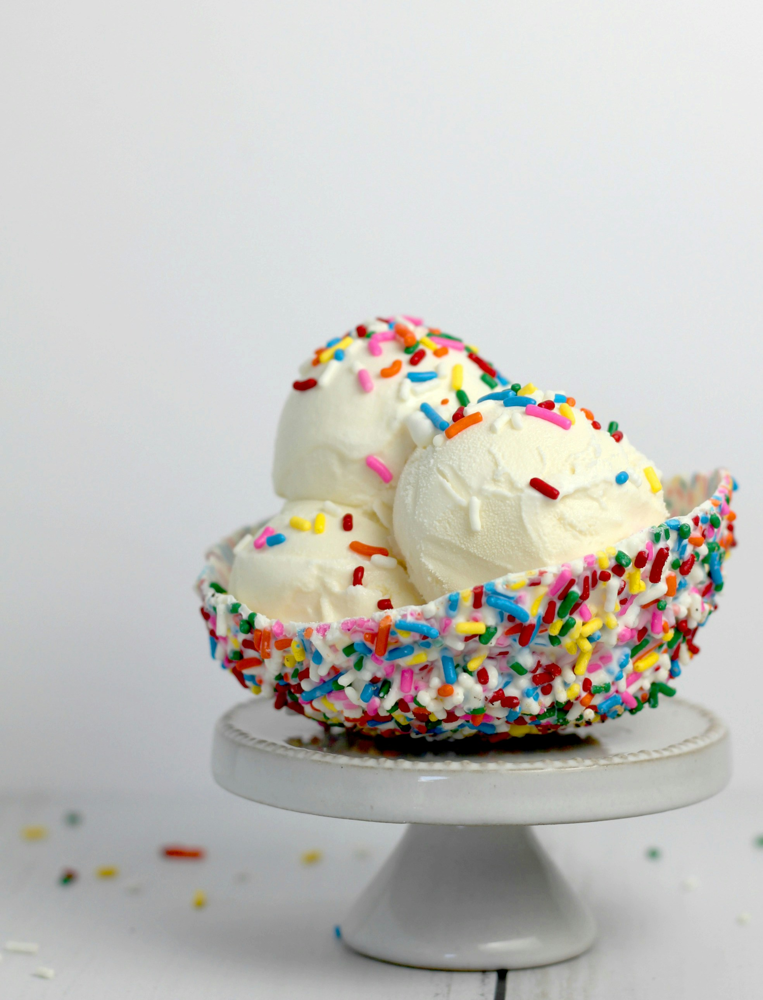

Home
Ice Cream

This is a basic recipe for vanilla ice cream
Ingredients
- Heavy Cream
- Whole Milk
- Cane Sugar
- Vanilla Extract
- Salt
Steps
- In a medium saucepan, combine the cream, milk, sugar, vanilla, and salt. Warm over medium-low heat, whisking often, for 5 minutes, or until the sugar dissolves and the mixture is warmed through.
- Pour into a heatproof bowl, cover, and chill for 2 hours or overnight.
- Remove the chilled ice cream base from the fridge and whisk well. Churn in an ice cream maker according to the manufacturer’s instructions, typically 20 to 30 minutes. The ice cream will be soft after churning. For firmer ice cream, transfer to an airtight container and freeze for 2 to 4 hours before serving.
- Store in an airtight container in the freezer for up to a month. If the ice cream is too firm to scoop straight from the freezer, let sit at room temperature for a few minutes to soften.